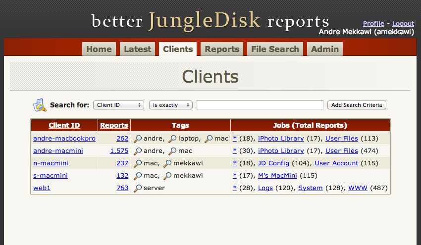

Portfolio : PHP
Note: All source code in the projects below were written by myself unless otherwise noted with credits.
Simple MVC ¶
In late 2010 I reviewed various PHP MVC frameworks for use with future projects.
After reviewing several I decided to experiment with creating a simple MVC while simultaneously digging into the source of several popular frameworks.
I ended development of this framework in early 2011 after deciding to use Yii.
View the Source on GitHub
/ Download Source as Zip
Code Highlights
- core/controllers/controller.php
- The controller for the application. Processes the request and provides helper methods to the application.
Can by extended by defining an
AppController class in the application.
- core/models/db_super.php
- The second level descendant for DB model class files defined by the application. Provides abstract methods for accessing the DB.
These methods may also be overridden by a
DBCore class
(e.g. core/models/mysql/db_core.php)
that would define DBMS-specific methods for performing the generic actions.
- core/start.php
- The entry script for the MVC. Includes required files, processes application config, connects to the database and dispatches the request to
Controller.
- core/controllers/helpers/download.php
- A helper class that wraps PHP's curl functionality and provides custom error handling.
- core/controllers/helpers/image.php
- Two helper classes that provide static methods useful when working with images, especially when creating thumbnails within specific maximum boundaries.
See Also
The Better JD Reports project used this framework. and as part of the Simple MVC experiment.
Note: This project was originally hosted in SourceForge,
and has been moved to GitHub for readability.
Disk Usage Reports ¶
In early 2011 I began work on a tool that would allow a server administrator to direct users to user friendly, web based, disk usage reports. This was a tool I sorely needed while managing the university-wide web hosting at Howard University. The only solution I was able to find was durep, which did not meet many of my needs.
Note: Since this application supports PHP4, it does not use PHP5 classes.
Visit the Web Site
/ View the Source on GitHub
/ Download Source as Zip
Feature Highlights
- File scanning and report generation are separated so that the heavier work can be completed on another server.
- Includes three versions of the file scanning script. An EXE for Windows systems (which allows for full UTF-8 support), a linux bash script and a PHP version.
- Reports are saved as static JSON files and viewed by a static HTML page that uses jQuery to retrieve and display the data.
- JSON files are separated by directory so that large reports can be quickly viewed on slow connections.
- Errors encountered during scanning and report generation are displayed in the report for easy troubleshooting.
- Supports UTF-8.
- File names are based on a hash of the relative path to the root directory of the report.
This will allow for future versions of Disk Usage Reports to compare reports generated at different times.
- Saves a file containing a list of basic directory data for the entire report, allowing the UI to display a sortable directory tree.
This file is disabled once it passes a user-customizable byte threshold.
- Calculates the following for each directory, up to a user-customizable depth of sub-directories.
- Top 100 largest files.
- Distribution of "last modified" dates, grouped by customizable time frames (e.g. 1-2 years).
- File size distribution, grouped by customizable size ranges (e.g. 500 KB - 1 MB).
- Totals by file type (e.g. .txt).
Code Highlights
- scripts/process.php
- The command line half of processing files generated by one of the file scanning scripts.
This file processes CLI arguments, provides help text, and outputs messages for status update events and errors.
The actual processing is done by
scripts/inc/process.class.php.
- scripts/inc/process.class.php
- This class does the actual processing of the data generated by one of the file scanning scripts.
- scripts/find.php
- The command line half of the PHP file scanning script.
This file processes CLI arguments, provides help text, and outputs messages for status update events and errors.
The actual processing is done by
scripts/inc/find.class.php.
- scripts/inc/find.class.php
- The class file for the PHP file scanning script, which performs the actual scanning.
Live Demo
See Also
Note: This project was originally hosted in SourceForge,
and has been moved to GitHub for readability.
Better JD Reports ¶
I use JungleDisk for backing up many of my desktops and several servers. While an excellent backup service it lacked a comprehensive way
to monitor backups and review large backup reports. As part of the Simple MVC experiment, this project aimed to provide these features.
Note: This project was a WIP and will be recreated using Yii in the future.
View the Source on GitHub
/ Download Source as Zip
Feature Highlights
- Report files are encrypted and compressed by clients before they are uploaded to the server running this application.
- Almost all pages include comprehensive search filters to find specific clients, jobs, reports or backed-up files.
- Search filters can be bookmarked for convenience.
- Clients can be tagged for organization.
- The report search tab doubles as the report-purging interface, providing comprehensive search filters and a preview of what will be purged.
- Admin actions (i.e. adding tags or purging reports) are logged.
Code Highlights
- app/models/mysql/report.php
- The Report model provides a Search method to safely and flexibly perform searches using varied criteria.
Internally the model uses its ProcessFilter method to break down filter string into SQL segments for a WHERE query.
- app/controllers/home_controller.php
- A simple example of a controller. DB Models are loaded using
Model::Load() and data is passed to the view using $this->setData().
- app/views/reports/search.php
- The view for report searches. This view is also used when purging records to allow the admin to verify the purge criteria are correct.
Screenshots
The home screen displays bookmarks and recent admin actions.
The Latest Reports tab lists the date of the latest report for each backup job.
It also lists the number of days since that backup, to quickly check on outstanding backups.

Clients can be tagged to help organize many clients.
Reports can be thoroughly filtered, and those search criteria can be bookmarked for future use.
Files can be searched for across all reports for a client. Minimum search criteria are enforced to avoid querying too many records.
‹
›
Note: This project was originally hosted in SourceForge,
and has been moved to GitHub for readability.
VTCalendar ¶
Originally made by Virginia Tech, this online calendar system was implemented at Howard University around 2007. At the time most calendar systems on the market seemed to be designed for commercial settings. These typically do not fit well with how a university organizes itself and manages its events. Since a university designed VTCalendar, it did not have these issues. After its implementation at Howard University I began work on improving the calendar, adding new features and fixes many bugs. In late 2008 I took over the project to share my changes with other universities.
View the Source on GitHub
/ Download Source as Zip
Improvement Highlights
- Major code refactoring.
- Hundreds of bug fixes and security fixes.
- Added "Upcoming" tab that shows all un-expired events in the next 365 days.
- Moved most styling from HTML (font tags, nested tables, etc) to CSS.
- Greatly improved ability to customize the calendar's look and feel.
- In additional to LDAP, an internal mechanism was added to authenticate users via HTTP authentication against a web address, to allow a custom script to provide authentication.
- Upcoming events can be displayed on other Web sites by inserting one line of JavaScript into the site. See www.howard.edu/calendar/public-export/instructions.php for an example.
- Added a wizard that upgrades the database as necessary between versions.
- Better support for PostgreSQL.
- Added general polish, such as...
- Performance and bandwidth improvements.
- Friendly messages for internal errors.
- Improved admin screens.
- Converted most DB columns to more appropriate types (i.e. 'text' to varchar).
- New color scheme.
Code Highlights
Most of VTCalendar's code is a mix of the previous authors and changes I have made. However, there are a few files that I created entirely:
- install/upgradedb.php and install/upgradedb-functions.php
- The database segment of the installation script. These scripts either create the database if it does not exist, or they modify the tables to match the schema defined in install/upgradedb-data.php. Warnings are given before making changes that would destroy existing data (such as reducing the length of a varchar column).
Note: This project was originally hosted in SourceForge,
and has been moved to GitHub for readability.